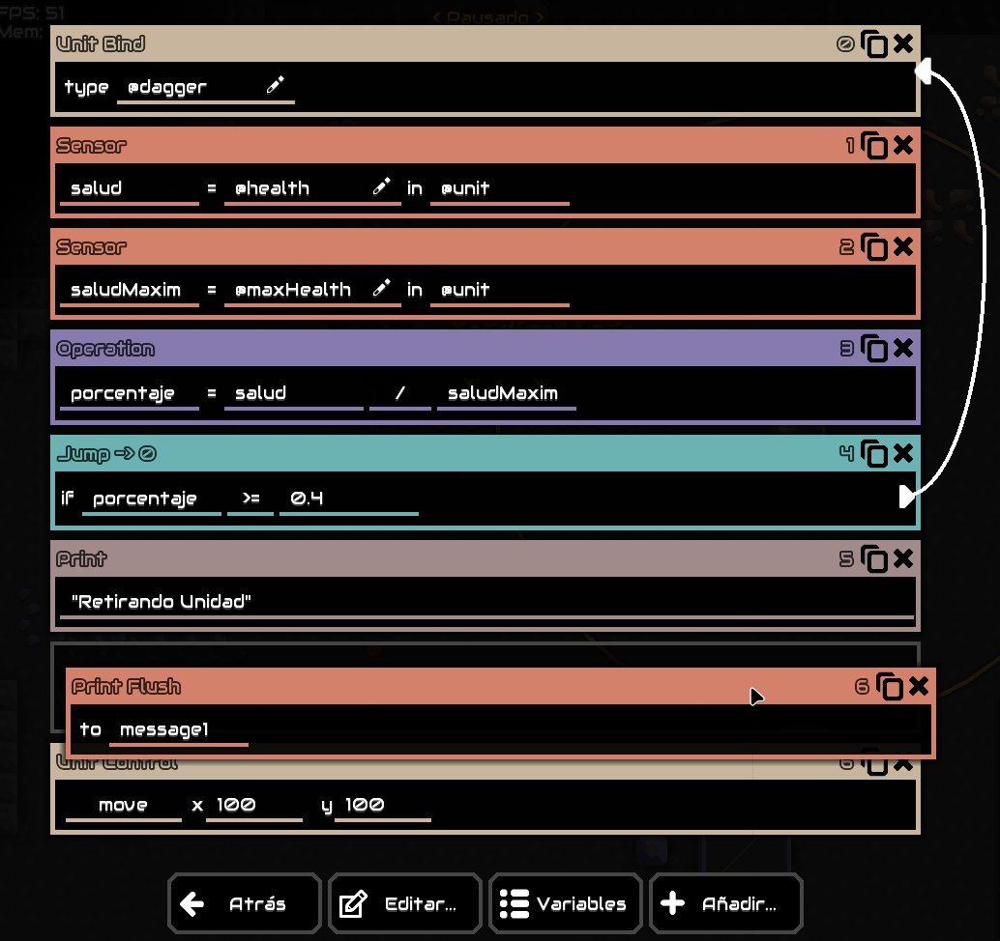

Como escribir código¶
Existen dos maneras principales de escribir el código lógico, de manera gráfica con el editor visual y de manera manual escribiendo cada instrucción a mano, cada uno tendrá sus ventajas y desventajas, explicadas a continuación:
Editor visual¶
El editor visual es la interfaz de edición que cuenta cada procesador (la que se abre al presionar el icono del lápiz). Es el método recomendado para principiantes ya que fue diseñado para ser simple y fácil de entender y usar.
Las ventajas de este por sobre la edición manual son las siguientes:
- Una interfaz de arrastrar y soltar basada en bloques con color.
- Facilidad para escoger parámetros ya que muestra todos los necesarios.
- Facilidad para establecer los saltos de linea (jumps).
- Facilidad de usar para los jugadores de móvil.

Editor manual¶
El editor manual implica el uso de herramientas para editar código como VisualStudio, Notepad++ o alguna otra. Es un método recomendado para usuarios experimentados ya que hay momentos donde el editor visual será difícil de usar conforme el código crece.
Las ventajas de este por sobre la edición visual son las siguientes:
- Es mas "denso", ya que puedes ver mucho más código en la pantalla.
- Escribir código es mucho mas rápido que arrastrar y soltar bloques a través de la interfaz.
- Puede usarse para crear pequeños fragmentos de código sin necesidad de entrar al juego.
- Algunos editores muestran la sintaxis de tu código.
- El texto de tus parámetros no queda bloqueado por el cuerpo del bloque.
- Habilidad para salvar y acceder al código fuera de Mindustry.
ubind @dagger
sensor salud @unit @health
sensor saludMaxima @unit @maxHealth
op div porcentaje salud saludMaxima
jump 0 greaterThanEq porcentaje 0.4
print "Retirando Unidad"
printflush message1
ucontrol move 100 100 0 0 0
Aún con esto, puede ser bastantes difícil para los principiantes que no se encuentren familiarizados con escribir código, ya que las variables tienen que "escribirse" explicita mente, además de que los saltos de linea (jumps) pueden ser difíciles de manejar sin una guía visual, entre otras cosas.